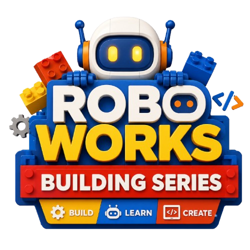

5 a 7 años
RoboStart
Primer contacto con la robótica desde el juego, la curiosidad y la imaginación.
Conocer RoboStartEn RoboWorks los niños aprenden robótica, programación y diseño 3D mientras entrenan algo más importante: resolver problemas, trabajar con otros, cuidar sus ideas y levantarse cuando algo no funciona.
Cada programa combina tecnología con juego, paciencia, retos y acompañamiento. El objetivo no es solo que sepan usar herramientas, sino que aprendan a pensar, crear y actuar con seguridad.
Primer contacto con la robótica desde el juego, la curiosidad y la imaginación.
Conocer RoboStart
Un espacio seguro para fortalecer atención, comunicación, autonomía y confianza.
Consultar cupos
Construcción guiada con LEGO para aprender con las manos y crecer con calma.
Ver detalles
Inglés práctico mientras construyen, explican, prueban y programan robots.
Conocer programa
Competencia, estrategia y alto nivel: aprender a exigirse sin perder el propósito.
Explorar RoboPro
Videojuegos, lógica computacional y Python para crear desde cualquier ciudad.
Inscripción online
'">Misiones LEGO paso a paso: construye, aprende y supera retos con Worky como guía.
Ver misionesLa tecnología no debería apagar la infancia. En RoboWorks se juega, se pregunta, se intenta de nuevo y se celebra el esfuerzo.
Mirar un problema y encontrar caminos posibles.
Crear pensando en otros, no solo en la máquina.
Probar, fallar, ajustar y volver a intentar.
Escuchar, explicar y construir en equipo.
Creer en lo que aún no se ve y dar el primer paso de todas formas.
Construyen, programan y presentan proyectos con sentido.
Acompañamos el ritmo y la personalidad de cada estudiante.
Participamos en torneos nacionales con equipos formados aquí.
Un centro de robótica educativa para familias que quieren futuro sin perder humanidad.
Cada estudiante accede con usuario y contraseña a materiales de clase, tareas, portafolio digital y certificados verificables con QR. Para los padres, esto convierte el aprendizaje en algo visible y acompañable.
Acceso EstudiantesTarea nueva disponiblePráctica de sensores - entrega: viernes
Certificado RISE completadoQR verificable listo para imprimir
Este juego lo creamos en RoboWorks en Scratch. Así se ve aprender a programar.